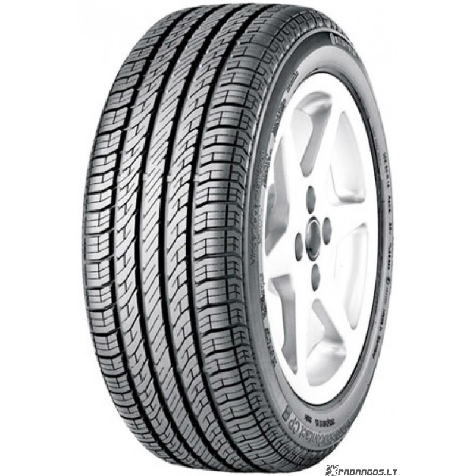

Welcome to automobilių-padangos
Automobilių padangos
2020.10.28 09:17
Interneto svetainės dizainui ir efektyvumui optimizuoti naudojame slapukus. Toliau naršydami šioje svetainėje jūs sutinkate su slapukų naudojimu. Sužinokite daugiau apie slapukus ir jų naudojimą.
Decline Padangos Vasarinės padangos Universaliosios padangos Žieminės padangos Naršyti visas padangas Kitos kampanijos Sužinokite Patarimai įsigyjant padangas ES padangų etiketė Sezoninės padangos Supratimas apie padangasPadangų žodynas Padangų priežiūra Padangų taisymas ir keitimas Kodėl „Goodyear“? Kokybės kriterijai Technologija ir inovacijos „Land Rover Experience“ 2017 m. turas Peru
Technologija „SoundComfort“ Efficientgrip Performance 2 Automobilių gamintojai (OE) Elektros energija varomų transporto priemonių ateitį „Eagle F1 Supersport“ asortimentą Le Mans 66 Goodyear Blimp Raskite prekybos atstovą Change country Kitos „Goodyear“ svetainės
Change country
België Belgique България Česká republika Danmark Deutschland Eesti España Ελλάδα France Hrvatska Ireland Italia Latvija Lietuva Luxembourg Magyarország Nederland Norge Österreich Polska Portugal Российская Федерация România Schweiz Suisse Svizzera Slovenija Slovensko South Africa Srbija Suomi Sverige Türkiye UAE Україна United KingdomKitos „Goodyear“ svetainės
Kitoms transporto priemonėms
Sunkvežimiai ir autobusai OTR padangosVisi prekių ženklai
Dunlop Fulda SavaPadangos verslui
MyWay Bendrovės svetainėAutomobilių padangos
Jų protektorius dėvisi iš lėto, padangos ilgai išlaiko puikią trauką bei kitas eksploatacines savybes.
Žiūrėti visas padangų kategorijas
Vasarinės padangos
Vasarinės padangos yra sukurtos švelnioms oro sąlygoms. Eksploatacinės savybės ima prastėti temperatūrai nukritus žemiau 7 °C.
Paskirtis: užtikrinti puikias eksploatacines savybes tiek esant šlapiai, tiek sausai kelio dangai. Kada verta rinktis: jeigu mėgstate vairuoti preciziškai ir gyvenate vietoje, kurioje dažniausiai būna šilta. Neapsigaukite dėl pavadinimo – vasarinės padangos pasižymi išties puikia trauka ant šlapios kelio dangos. Tik nepamirškite pakeisti šių padangų žieminėmis, jeigu prireiktų važiuoti per ledą ir sniegą.Daugiau apie vasarines padangas
Universaliosios padangos
Kaip rodo pavadinimas, mūsų universaliosios padangos yra puikus pasirinkimas važiuoti visus metus įvairiomis dangomis ir sąlygomis.
Jos skirtos susidoroti su besikeičiančiomis oro sąlygomis, pvz., lietumi, šlabdriba ir netgi lengvu sniegu. Apsvarstykite jų įsigijimą, jei gyvenate tokioje vietoje, kurioje susiduriate su įvairiomis oro sąlygomis. Tačiau, jei žinote, kad nuolat reikės važiuoti per sniegą arba ledą, turėtumėte apsvarstyti galimybę šaltesniems mėnesiams įsigyti žiemines padangas.Daugiau apie universaliąsias padangas
Žieminės padangos
Optimizuotos šalto oro sąlygoms, kai temperatūra 7 °C ir žemesnė, o jų protektorius sukurtas taip, kad užtikrintų kuo geresnę trauką.
Paskirtis: užtikrinti geresnį sukibimą su kelio danga netgi pačiomis sudėtingiausiomis žiemos sąlygomis, tokiomis kaip patižęs ir normalus sniegas, lijundra ir ledas. Kada verta rinktis: jeigu gyvenate vietoje, kurioje dažnai būna sniego ir ledo. Tačiau žieminės padangos nėra pritaikytos visiems sezonams. Orui atšilus, jas reikėtų pakeisti vasarinėmis arba universaliosiomis padangomis.Daugiau apie žiemines padangas
Žiūrėti sezoninių padangų vadovąTransporto priemonės tipas
Vasarinės Universaliosios Žiema Filtruoti padangas VasarinėsEfficientGrip Performance 2
50 proc. ilgesnis atstumas. Su „Goodyear“ nuvažiuosite toliau*
Taip pat galima įsigyti
Ratlankio apsaugos priemonėNe kiekviena padanga tiks jūsų transporto priemonei. Leiskite padėti jums surasti tinkamas padangas.
Rasti padangasarba
Padangų duomenys VasarinėsEagle F1 SuperSport
Lenktynių įkvėptos padangos, pasižyminčios išskirtinėmis sukibimo ir valdymo savybėmis sausame kelyje
Taip pat galima įsigyti
Ratlankio apsaugos priemonėNe kiekviena padanga tiks jūsų transporto priemonei. Leiskite padėti jums surasti tinkamas padangas.
Rasti padangasarba
Padangų duomenys VasarinėsEagle F1 SuperSport R
Išskirtinis sukibimas ir tikslus vairavimas važiuojant sausa danga lenktynių trasoje ir kelyje
Taip pat galima įsigyti
Ratlankio apsaugos priemonėNe kiekviena padanga tiks jūsų transporto priemonei. Leiskite padėti jums surasti tinkamas padangas.
Rasti padangasarba
Padangų duomenys VasarinėsEagle F1 SuperSport RS
Lenktynėms tinkamos padangos, leidžiančios labiau mėgautis važiavimu sausa danga
Taip pat galima įsigyti
Ratlankio apsaugos priemonėNe kiekviena padanga tiks jūsų transporto priemonei. Leiskite padėti jums surasti tinkamas padangas.
Rasti padangasarba
Padangų duomenys Vasarinės„Eagle F1 Asymmetric 3“
Naujo našumo padanga, kurią naudojant užtikrinamas trumpesnis stabdymo kelias ant šlapios ir sausos kelio dangos, todėl bus lengviau automobilį valdyti ir mėgautis kelione
Taip pat galima įsigyti
Ratlankio apsaugos priemonė „Run on flat“ SoundComfortNe kiekviena padanga tiks jūsų transporto priemonei. Leiskite padėti jums surasti tinkamas padangas.
Rasti padangasarba
Padangų duomenys Vasarinės„Eagle F1 Asymmetric 2“
Labai galingų automobilių padangos, padedančios sutrumpinti stabdymo kelią, kai to labiausiai reikia
Taip pat galima įsigyti
Ratlankio apsaugos priemonė „Run on flat“ SoundComfortNe kiekviena padanga tiks jūsų transporto priemonei. Leiskite padėti jums surasti tinkamas padangas.
Rasti padangasarba
Padangų duomenys VasarinėsEagle F1 Asymmetric 5
Prabangus komfortas ir išskirtinės stabdymo ant šlapios dangos savybės
Taip pat galima įsigyti
Ratlankio apsaugos priemonė „Run on flat“ SoundComfortNe kiekviena padanga tiks jūsų transporto priemonei. Leiskite padėti jums surasti tinkamas padangas.
Rasti padangasarba
Padangų duomenys Vasarinės„EfficientGrip Performance“
Geriau su šlapia danga sukimbančios padangos, trumpesnis stabdymo kelias
Taip pat galima įsigyti
Ratlankio apsaugos priemonė „Run on flat“ SoundComfortNe kiekviena padanga tiks jūsų transporto priemonei. Leiskite padėti jums surasti tinkamas padangas.
Rasti padangasarba
Padangų duomenys Vasarinės„EfficientGrip“
Degalus padedančios taupyti ir ilgiau naudojamos padangos
Taip pat galima įsigyti
Ratlankio apsaugos priemonė „Run on flat“ SoundComfortNe kiekviena padanga tiks jūsų transporto priemonei. Leiskite padėti jums surasti tinkamas padangas.
Rasti padangasarba
Padangų duomenys Vasarinės„Excellence“
Padangos „trys viename“, suteikiančios puikų sukibimą, valdymą ir komfortą.
Taip pat galima įsigyti
Ratlankio apsaugos priemonė „Run on flat“Ne kiekviena padanga tiks jūsų transporto priemonei. Leiskite padėti jums surasti tinkamas padangas.
Rasti padangasarba
Padangų duomenys Vasarinės„EfficientGrip Compact“
Patvarios padangos, padedančios taupyti degalus ir saugiai vairuoti važiuojant sausu ir šlapiu keliu
Ne kiekviena padanga tiks jūsų transporto priemonei. Leiskite padėti jums surasti tinkamas padangas.
Rasti padangasarba
Padangų duomenys Vasarinės„DuraGrip“
Ilgalaikės padangos, padedančios krovininiam automobiliui taupyti degalus
Ne kiekviena padanga tiks jūsų transporto priemonei. Leiskite padėti jums surasti tinkamas padangas.
Rasti padangasarba
Padangų duomenys Universaliosios„Vector 4Seasons Gen-2“
Puikios eksploatacinės savybės esant bet kokiam orui visus metus
Taip pat galima įsigyti
Ratlankio apsaugos priemonė „Run on flat“Ne kiekviena padanga tiks jūsų transporto priemonei. Leiskite padėti jums surasti tinkamas padangas.
Rasti padangasarba
Padangų duomenys UniversaliosiosVector 4Seasons Gen-3
Puikus valdymas šalpiame, sausame ir apsnigtame kelyje. Daugiau testų laimėjimų, nei bet kurio kito prekės ženklo*
Taip pat galima įsigyti
Ratlankio apsaugos priemonėNe kiekviena padanga tiks jūsų transporto priemonei. Leiskite padėti jums surasti tinkamas padangas.
Rasti padangasarba
Padangų duomenys UniversaliosiosVector 4Seasons Gen-1
Pukios savybės ištisus metus
Taip pat galima įsigyti
Ratlankio apsaugos priemonėNe kiekviena padanga tiks jūsų transporto priemonei. Leiskite padėti jums surasti tinkamas padangas.
Rasti padangasarba
Padangų duomenys Žiema„UltraGrip Ice Arctic“
Dygliuota padanga, optimizuota arktinėms eismo sąlygoms
Taip pat galima įsigyti
Ratlankio apsaugos priemonė Dygliuotos padangos SoundComfortNe kiekviena padanga tiks jūsų transporto priemonei. Leiskite padėti jums surasti tinkamas padangas.
Rasti padangasarba
Padangų duomenys Žiema„UltraGrip Ice 2“
Patikimai įveikite ekstremalias žiemos sąlygas
Taip pat galima įsigyti
Ratlankio apsaugos priemonė Nedygliuotos Šiaurės šalių padangos SoundComfortNe kiekviena padanga tiks jūsų transporto priemonei. Leiskite padėti jums surasti tinkamas padangas.
Rasti padangasarba
Padangų duomenys ŽiemaUltraGrip Performance +
Geresnė trauka tiek šlapiame, tiek sausame kelyje ir žiemą
Taip pat galima įsigyti
Ratlankio apsaugos priemonė „Run on flat“ SoundComfortNe kiekviena padanga tiks jūsų transporto priemonei. Leiskite padėti jums surasti tinkamas padangas.
Rasti padangasarba
Padangų duomenys Žiema„UltraGrip Performance“
Puikus sukibimas ir puikus valdymas bet kokiomis žiemos sąlygomis
Taip pat galima įsigyti
Ratlankio apsaugos priemonė „Run on flat“ SoundComfortNe kiekviena padanga tiks jūsų transporto priemonei. Leiskite padėti jums surasti tinkamas padangas.
Rasti padangasarba
Padangų duomenys Žiema„UltraGrip Performance 2“
Per bandymus geriausius rezultatus pasiekiančios žieminės padangos, skirtos galingiems automobiliams
Taip pat galima įsigyti
Ratlankio apsaugos priemonė „Run on flat“Ne kiekviena padanga tiks jūsų transporto priemonei. Leiskite padėti jums surasti tinkamas padangas.
Rasti padangasarba
Padangų duomenys Žiema„UltraGrip 8 Performance“
Didelio efektyvumo padangos, skirtos sudėtingoms žiemos eismo sąlygoms
Taip pat galima įsigyti
Ratlankio apsaugos priemonė „Run on flat“Ne kiekviena padanga tiks jūsų transporto priemonei. Leiskite padėti jums surasti tinkamas padangas.
Rasti padangasarba
Padangų duomenys Žiema„UltraGrip Ice Arctic SUV“
Parodykite žiemai, kas čia vadovauja
Taip pat galima įsigyti
Ratlankio apsaugos priemonė Dygliuotos padangos SoundComfortNe kiekviena padanga tiks jūsų transporto priemonei. Leiskite padėti jums surasti tinkamas padangas.
Rasti padangasarba
Padangų duomenys Žiema„UltraGrip Ice SUV“
Išskirtinės sukibimo savybės važiuojant apledėjusia ir apsnigta kelio danga
Taip pat galima įsigyti
Ratlankio apsaugos priemonė Nedygliuotos Šiaurės šalių padangos SoundComfortNe kiekviena padanga tiks jūsų transporto priemonei. Leiskite padėti jums surasti tinkamas padangas.
Rasti padangasarba
Padangų duomenys Žiema„UltraGrip Performance SUV“
Visureigių padangos lemia trumpesnį stabdymo kelią esant bet kokioms žiemos sąlygoms
Taip pat galima įsigyti
Ratlankio apsaugos priemonė SoundComfortNe kiekviena padanga tiks jūsų transporto priemonei. Leiskite padėti jums surasti tinkamas padangas.
Rasti padangasarba
Padangų duomenys ŽiemaUltraGrip 9+
Geresnė trauka žiemą ir didesnė rida
Ne kiekviena padanga tiks jūsų transporto priemonei. Leiskite padėti jums surasti tinkamas padangas.
Rasti padangasarba
Padangų duomenys Žiema„UltraGrip 9“
Išskirtinės savybės nepalankiausiomis žiemos oro sąlygomis.
Ne kiekviena padanga tiks jūsų transporto priemonei. Leiskite padėti jums surasti tinkamas padangas.
Rasti padangasarba
Padangų duomenys Žiema„UltraGrip 8“
Žieminės padangos, užtikrinančios išskirtinę trauką važiuojant per sniegą
Taip pat galima įsigyti
Ratlankio apsaugos priemonė „Run on flat“Ne kiekviena padanga tiks jūsų transporto priemonei. Leiskite padėti jums surasti tinkamas padangas.
Rasti padangasarba
Padangų duomenysPadangų ypatybės
Kai kurios mūsų padangos pasižymi specialiomis ypatybėmis, suteikiančiomis joms pranašumą tam tikrose situacijose. Čia pateikiamas trumpas paaiškinimas apie tai.
Technologija „SoundComfort“
Mūsų technologija „SoundComfort“ sumažina triukšmo lygį salone iki 50 %* ir leidžia mėgautis žymiai tylesne ir patogesne kelione
„RunOnFlat“
Mūsų revoliucinė „RunOnFlat“ technologija leidžia važiuoti tuščia padanga iki 80 km/h greičiu. Taigi, nebereikia keisti padangos pakelėje ir sumažėja padangos sprogimo greitkelyje pavojus.
Ratlankio apsauga
Padanga turi ratlankio apsaugas, todėl sumažinamas pavojus apsibraižyti į bortelį.
Važiavimas keliu
Skirtos visureigiams važiuoti kelyje iki 270 km/h greičiu.
Važiavimas bekele
Šios automobilių su keturiais varančiaisiais ratais padangos yra skirtos važiuoti bekele.
Važiavimas keliu ir bekele
Šios padangos yra skirtos automobiliams su keturiais varančiaisiais ratais važiuoti bekele, tačiau tinka važiuoti ir keliu iki 190 km/h greičiu.
Nedygliuotos Šiaurės šalių padangos
Nedygliuotosios padangos, skirtos Šiaurės šalių žiemos sąlygoms. Pagamintos iš minkštesnio gumos mišinio, pritaikyto žemesnei temperatūrai ir užtikrinančio optimalų sukibimą apledėjusiame ir apsnigtame kelyje.
Dygliuotos padangos
Dygliuotosios padangos užtikrina labai gerą sukibimą su ledu. Tai svarbu apledėjusiuose keliuose ypač atšiauriomis žiemos sąlygomis. Dygliai užtikrina geriausią sukibimą ir trumpiausią stabdymą ant ledo.
*Priklausomai nuo automobilio modelio, važiavimo greičio ir kelio dangos. Remiantis automoilio vidaus garso parametrais, testuota 2018m. vasarį, 2018 m. sausį, 2017 m. lapkritį ir 2011 m. spalį Goodyear inžinierių Liuksemburge. Padangų dydis: 225/55R17, naudojant automobilius VW Passat Alltrack ir Ford Kuga; 255/45R18, naudojant automobilį Audi A7.
Ne visos padangos tinka jūsų transporto priemonei. Leiskite padėti jums rasti tinkamas padangas.
Rasti platintojąPadangos pagal kategoriją
Vasarinės Universaliosios Žieminės Naršyti visas padangasPadangos pagal transporto priemonę
Lengvasis automobilis SUV/4x4 Furgonas Visos transporto priemonėsNaudinga informacija
Raskite prekybos atstovą Padangų pirkimo vadovasDaugiau apie „Goodyear“
Susisiekite su mumis Karjera Bendrovė „Goodyear“Social
Facebook YouTubeMore Information
Naudojimo sąlygos Privatumo politika Svetainės žemėlapis Newsroom